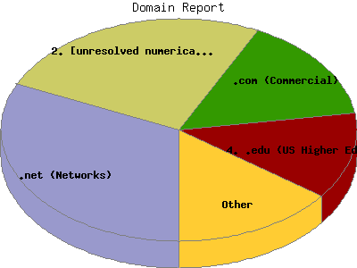

Report generated by Analog 5.91beta1 and Report Magic 2.21
|
Web Server Statistics for "Harish Narayanan (hnarayan) - June 2004" Report generated by Analog 5.91beta1 and Report Magic 2.21 |
The Domain Report identifies the top origins of visitors to this site. This is determined by the suffix of their domain name. Use this information carefully as this is based on where their domain name is registered and may not always be an accurate identifier of the actual geographic location of this visitor. For example, while most .com domain names are from the United States, there are a growing number of .com domain names that exist outside the United States.
This report shows all results. This report is sorted by number of requests.

| Domain Name | Number of requests | Number of bytes transferred | Percentage of the bytes | Percentage of the requests | |
|---|---|---|---|---|---|
| 1. | .net (Networks) | 910 | 26.847 MB | 42.89% | 31.72% |
| 2. | [unresolved numerical addresses] | 737 | 9.418 MB | 15.05% | 25.69% |
| 3. | .com (Commercial) | 436 | 10.562 MB | 16.87% | 15.20% |
| aol.com (America Online) | 29 | 347.847 KB | 0.54% | 1.01% | |
| 4. | .edu (US Higher Education) | 361 | 7.595 MB | 12.13% | 12.58% |
| berkeley.edu | 27 | 1.635 MB | 2.61% | 0.94% | |
| uiowa.edu | 19 | 1.626 MB | 2.60% | 0.66% | |
| umich.edu | 121 | 1.381 MB | 2.21% | 4.22% | |
| engin.umich.edu | 95 | 859.714 KB | 1.34% | 3.31% | |
| ummu.umich.edu | 13 | 479.299 KB | 0.75% | 0.45% | |
| vt.edu | 27 | 771.307 KB | 1.20% | 0.94% | |
| louisville.edu | 11 | 375.254 KB | 0.58% | 0.38% | |
| stanford.edu | 7 | 350.861 KB | 0.55% | 0.24% | |
| uta.edu | 7 | 350.861 KB | 0.55% | 0.24% | |
| tamu.edu | 7 | 350.861 KB | 0.55% | 0.24% | |
| 5. | .ca (Canada) | 79 | 1.276 MB | 2.04% | 2.75% |
| 6. | .de (Germany) | 61 | 596.155 KB | 0.93% | 2.13% |
| 7. | .fr (France) | 53 | 1.094 MB | 1.75% | 1.85% |
| 8. | .jp (Japan) | 32 | 265.187 KB | 0.41% | 1.11% |
| 9. | .uk (United Kingdom) | 22 | 270.422 KB | 0.42% | 0.77% |
| 10. | .be (Belgium) | 21 | 131.085 KB | 0.20% | 0.73% |
| 11. | .org (Non Profit Making Organizations) | 19 | 84.346 KB | 0.13% | 0.66% |
| 12. | .nl (Netherlands) | 18 | 771.529 KB | 1.20% | 0.63% |
| 13. | .ru (Russia) | 16 | 184.297 KB | 0.29% | 0.56% |
| 14. | .gov (US Government) | 15 | 96.823 KB | 0.15% | 0.52% |
| 15. | .au (Australia) | 14 | 67.702 KB | 0.11% | 0.49% |
| 16. | .il (Israel) | 13 | 375.841 KB | 0.59% | 0.45% |
| 17. | .in (India) | 13 | 191.374 KB | 0.30% | 0.45% |
| 18. | .no (Norway) | 11 | 1.545 MB | 2.47% | 0.38% |
| 19. | .ch (Switzerland) | 7 | 33.490 KB | 0.05% | 0.24% |
| 20. | .hu (Hungary) | 6 | 54.090 KB | 0.08% | 0.21% |
| 21. | .it (Italy) | 5 | 48.665 KB | 0.08% | 0.17% |
| 22. | .se (Sweden) | 4 | 36.344 KB | 0.06% | 0.14% |
| 23. | .fi (Finland) | 2 | 326.196 KB | 0.51% | 0.07% |
| 24. | .dk (Denmark) | 2 | 5.068 KB | 0.01% | 0.07% |
| 25. | .tg (Togo) | 2 | 8.923 KB | 0.01% | 0.07% |
| 26. | .gr (Greece) | 2 | 13.721 KB | 0.02% | 0.07% |
| 27. | .sg (Singapore) | 2 | 766.871 KB | 1.20% | 0.07% |
| 28. | .mx (Mexico) | 1 | 6.346 KB | 0.01% | 0.04% |
| 29. | .pl (Poland) | 1 | 2.522 KB | 0.00% | 0.04% |
| 30. | .ro (Romania) | 1 | 2.522 KB | 0.00% | 0.04% |
| 31. | .pt (Portugal) | 1 | 238.000 B | 0.00% | 0.04% |
| 32. | .ee (Estonia) | 1 | 19.719 KB | 0.03% | 0.04% |
| 33. | .tw (Taiwan) | 1 | 2.522 KB | 0.00% | 0.04% |
This report was generated on August 5, 2004 15:51.
Report time frame June 1, 2004 00:13 to June 30, 2004 23:30.
| Web statistics report produced by: | |
 Analog 5.91beta1 Analog 5.91beta1 |  Report Magic 2.21 Report Magic 2.21 |